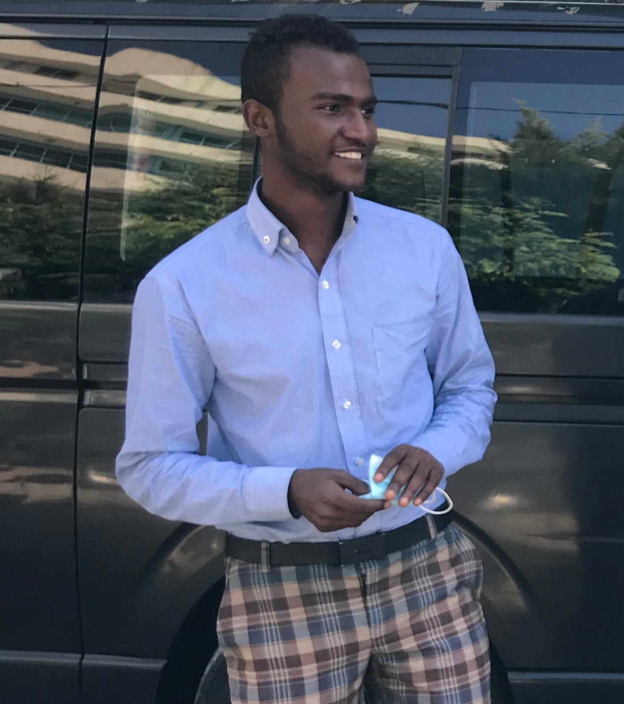
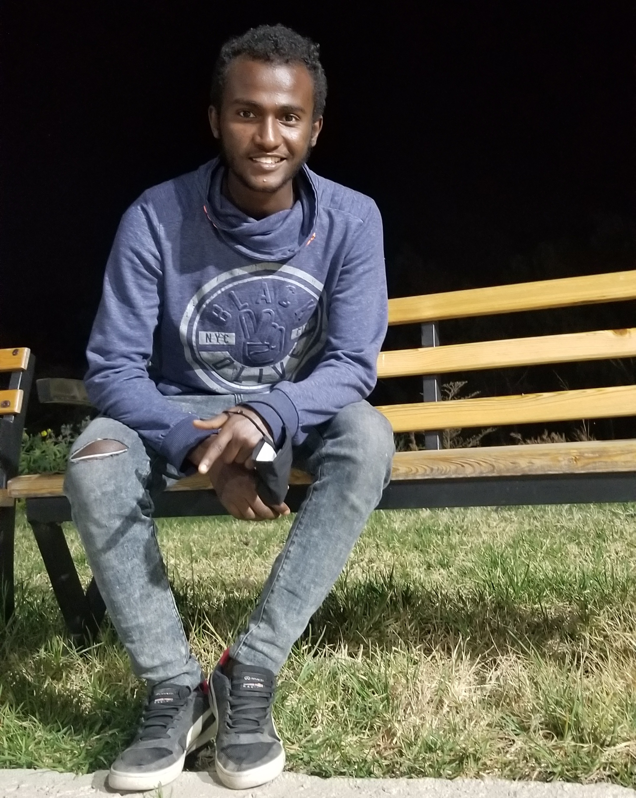
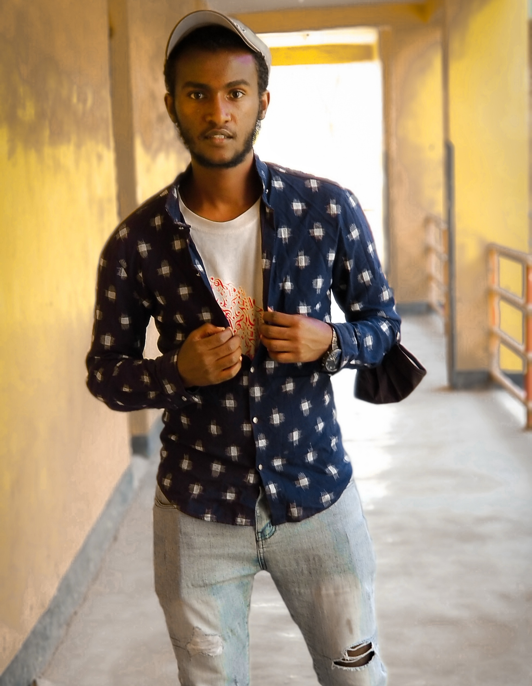
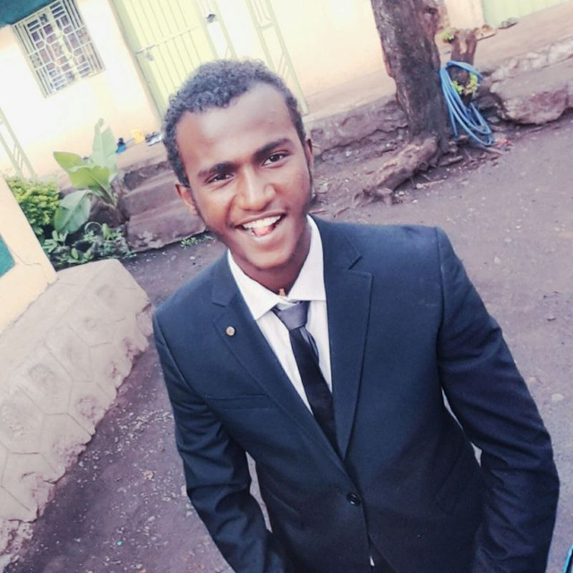

I was born june 21 in 1993, in thr northern part of Ethiopia specifically in Woldia.
My mothers name is Roman Mengistea and she have a masters degree in social working and she is also a civil servant.
My Fathers name is Dessalegn Gugssa he worked at sport station.
My mother is one of the strongest and smartest peoples I know, and she is also an inspiration in my city.
not only she learn her msc she also raised 4 very talented boys by her own.She supports me and all of my brothers inn everything we try to do.
My mother is my role model.
I have 2 older and one younger brother.
Our older brother the first one's name is Micheal Dessalegn or Abuye as we call him.
he graduated his first degree in Architectural Engineering at Addis Abeba university and he also have his masters in Architect.
currently he is a lecturer in welkite university and he is also conducting his personal business in Addis Abeba.
Recently he proposed to a great women named Eden Tilahun. She is a hostes at ethiopian airlines and she is also a well professional nurse and a great person too.
Though she is my brothers fiancee I would like to call her my sister because she is a part of our family.
My older brother mike he is on his way to make this whole nation great and I am very proud of him.
My other older brothers name is Petros Dessaleg. He is the second child from the family. He also graduated from Addis Abeba University in COTM (Constraction Management) Engineering field.
He also had his masters degree in Addis Abeba Science and Technology University.
currently he is a lecturer at Woldia University. He and his wife Tigist Eshetu moved in together recently. she also graduated in Engineering field on Gonder university, she also studied business.
Tg is a great person and a lovely wife.
I am very proud of what he do. and one day I hope to be like both of my older brothers, cuz they both are my second role models after mom.
My younger brothers name is kalabe Dessalegn we call him Kalu, Kalisha, kelaw for short. he is the last and the younger son of the family. because he is the last son he might be a little bit spoiled.
He is a grade 11 student currently and he is also a claver student. He like to watch movies and play video games may be too much. Hes into Action movies.
He still don't have a girlfriend not that I know of but their are a lot of girls who have a crash on him.
When am spending time with him we compet alot, what can I say I'm bit competitive.
Most of the time him and I fights a lot but he is the most one I miss when I'm away, and no matter how we disagree at the end of the day he is my little brother and my best friend.
The other member of our family is my aunt, Her name is Meseret Kebede. she is my mothers sister and she has been with us most of our childhood,
basicly she is like our mother.
She loves Kalu so much, I think its because she has been around when he was born. though she loves all of us so much and we love her too.
When we circle back to me I grew up in a neighbour called Adago, because its so near to the secondary school I was familier with the school members in cluding the teachers.
so if I had made one problem my mother would hear about it.
My hobbies are doing sports, writing, playing with my friends, and I also like playing football. growing up we had a football club named 'pre united', we never made it to the finals.
I also like going to church and spending time their praying and doing some God's work, though am not a relly perfect at it.
Until I was grade 8 I learn at school called ' Etege Tayetu Btul ' primary school , sheq Alamudin the wealthies guy in Ethiopia learned their.
I made some cool friends their though I don't know what they are doing rigth now , I doubt it the will remember me if we met currently.
After I attend my secondary school education i took the national exam after finishing grade 12 then I scored 469 point, then I took the test to join the
Adama science and technology University.
Currently I am a student of ASTU studying in the Department of ECE on Electrical Engineering School.
|  |  |
|  |  |